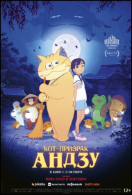

Кот-призрак Андзу
«Кот-призрак Андзу» – адаптация манги Такаси Имасиро – история дружбы между Карин, сильной духом девочкой, которую отправили жить к своему дедушке-монаху в японскую деревню, и Андзу, непредсказуемым призрачным котом, который становится ее опекуном. В японской мифологии «бакэнэко», или призрачные коты — существа, которые обладают необыкновенными способностями: умеют создавать огненные шары, ходить на задних лапах и иногда даже принимают облик своего хозяина.